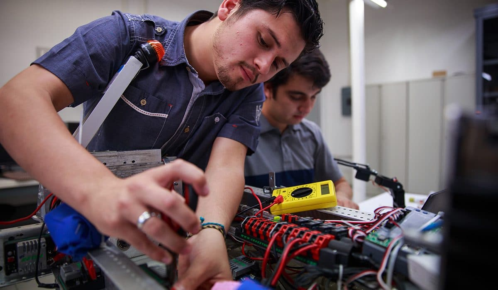

Oferta Académica
Nuestras Tecnicaturas
Tecnicatura Superior en Química Industrial
Duración 3 años
Forma profesionales para gestionar procesos industriales con transformaciones físicas y químicas, aplicar normas de seguridad e higiene y realizar análisis de laboratorio. El técnico estará capacitado para desempeñarse en industrias con procesos tecnológicos de base química, habilitándolo para organizar y controlar operaciones de plantas de proceso y de cogeneración de energía.
Tecnicatura Superior en Mecatrónica
Duración 3 años
Integra mecánica, electrónica e informática para diseñar, operar y mantener sistemas automatizados y robóticos aplicados a la producción industrial. El perfil está fuertemente ligado al rubro industrial, permitiendo configurar sistemas mecatrónicos, planificar y supervisar su montaje y mantenimiento, siguiendo protocolos de calidad, seguridad y cuidado ambiental.

Tecnicatura Superior en Telecomunicaciones
Duración 2 años y medio
Prepara técnicos en redes de comunicación, sistemas de transmisión, fibra óptica y comunicaciones digitales. El graduado podrá desarrollar proyectos específicos, gestionar y supervisar el montaje y mantenimiento de sistemas y equipos de telecomunicaciones (redes de banda ancha, radiocomunicaciones fijas y móviles) y hardware informático asociado.
Tecnicatura Superior en Desarrollo de Software Multiplataforma
Duración 2 años
Forma desarrolladores capaces de diseñar e implementar aplicaciones web, móviles y de escritorio usando metodologías ágiles. El graduado tendrá la capacidad de concebir soluciones innovadoras de análisis, diseño y programación en diferentes plataformas, respondiendo a las demandas de las empresas, la industria y el estado.
Requisitos de Inscripción
- DNI original y fotocopia
- Título Secundario certificado
- Partida de nacimiento
- 2 fotos 4x4
- Constancia de CUIL
- Duración: 3 años
- Modalidad presencial
- Asistencia mínima: 75%
- Título con validez nacional
- Educación pública y gratuita